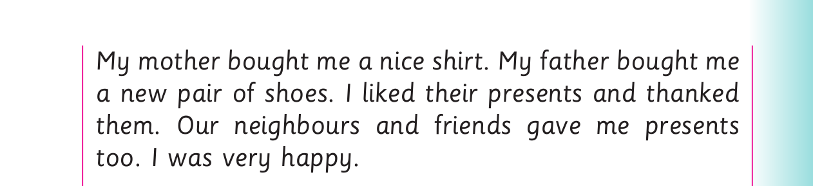
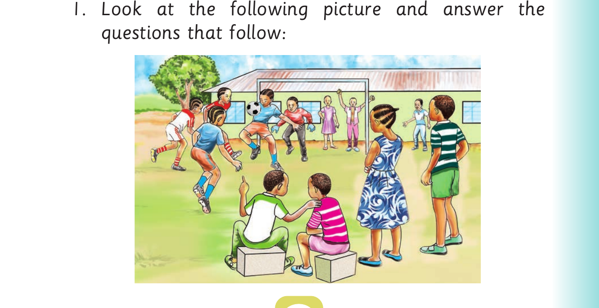

Musa's birthday - questions and picture comprehension

For Musa's birthday - questions and picture comprehension, panel 1 of 3 shows this reviewed visual content: A football picture shows girls playing while pupils and adults watch from the sidelines. The printed labels and instructions include: My mother bought me a nice shirt. My father bought me a new pair of shoes. I liked their presents and thanked them. Our neighbours and friends gave me presents too. I was very happy.
My mother bought me a nice shirt. My father bought me
a new pair of shoes. I liked their presents and thanked
them. Our neighbours and friends gave me presents
too. I was very happy.
For Musa's birthday - questions and picture comprehension, panel 2 of 3 shows this reviewed visual content: A football picture shows girls playing while pupils and adults watch from the sidelines. The printed labels and instructions include: Questions 1. How old is Musa? 2. What did Musa’s mother do in the morning of the 13 th of January? 3. What present did Musa receive from his mother? 4. What present did Musa receive from his father? 5. What did Musa and his friends do? 6. When is your birthday? 7. What do you like about Musa’s birthday?
Questions
1. How old is Musa?
2. What did Musa’s mother do in the morning of the
13 th of January?
3. What present did Musa receive from his mother?
4. What present did Musa receive from his father?
5. What did Musa and his friends do?
6. When is your birthday?
7. What do you like about Musa’s birthday?
Activity 3

For Musa's birthday - questions and picture comprehension, panel 3 of 3 shows this reviewed visual content: A football picture shows girls playing while pupils and adults watch from the sidelines. The printed labels and instructions include: 1. Look at the following picture and answer the questions that follow:
1. Look at the following picture and answer the
questions that follow:
![For Musa's birthday - questions and picture comprehension, panel 2 of 3 shows this reviewed visual content: A football picture shows girls playing while pupils and adults watch from the sidelines. The printed labels and instructions include: Questions 1. How old is Musa? 2. What did Musa’s mother do in the morning of the 13 th of January? 3. What present did Musa receive from his mother? 4. What present did Musa receive from his father? 5. What did Musa and his friends do? 6. When is your birthday? 7. What do you like about Musa’s birthday?](images/pg091_sec001_panel02.png)